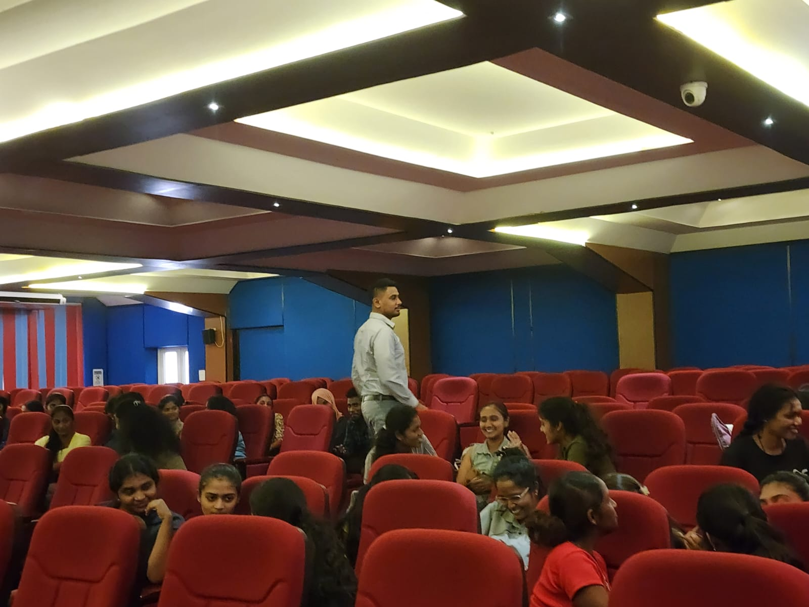
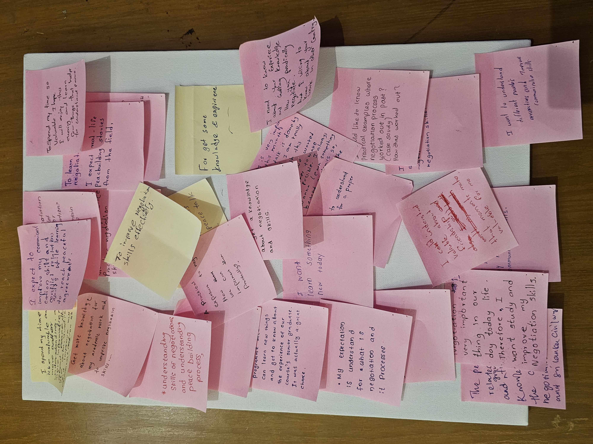
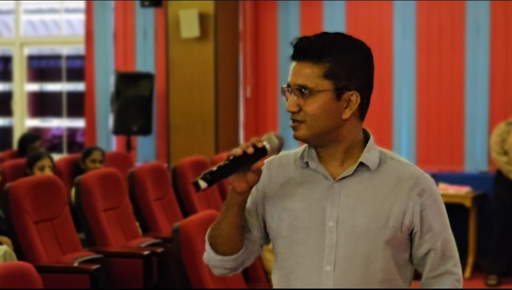

HIGHER EDUCATION ENGAGEMENT
Negotiation & Peacebuilding
University of Kelaniya · Sri Lanka
I served as a co-facilitator in a negotiation workshop for university students, in collaboration with Mr Buddhika Harshadewa. The session explored negotiation, interpersonal communication, conflict resolution and peacebuilding through participatory learning and professional dialogue.
Students were invited to articulate their learning expectations and explore the practical relevance of negotiation.



